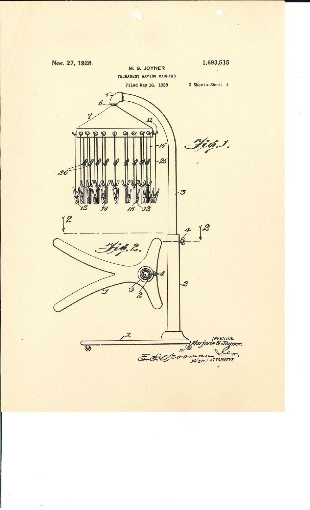
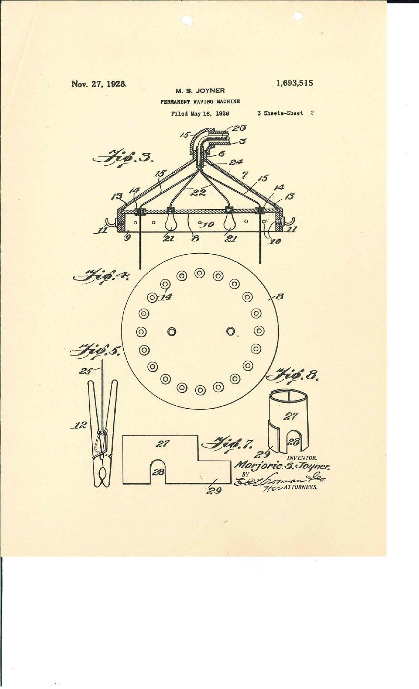
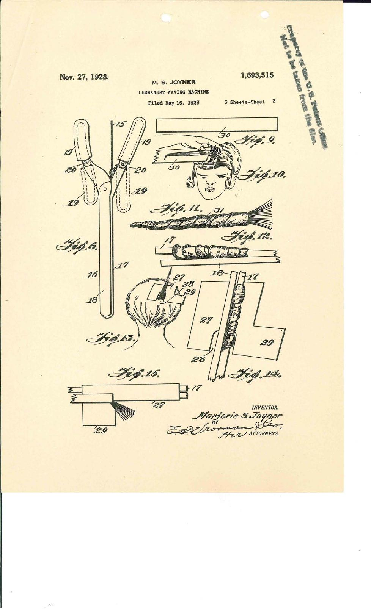

The complete 29-page digitised patent case file for Marjorie S. Joyner’s Permanent Waving Machine is reproduced here from the U.S. National Archives.
Primary-source record
U.S. Patent: 1,693,515
Application filed: May 16, 1928
Patent granted: November 27, 1928
Archive: National Archives at Kansas City · Record Group 241
National Archives Identifier: 167819674
Research archive ID: FH-USA-1928-JOYNER-001
Read the complete original patent case file (PDF, 29 pages) →
Original patent drawings
These three drawings are reproduced from pages 14–16 of the digitised case file. The original patent sheet numbers are shown in each drawing. They document the proposed apparatus and hair-winding details; they are not evidence of commercial production.






A second invention: the Scalp Protector (1929)
Joyner also received U.S. Patent 1,716,173, Scalp Protector, issued on June 4, 1929. The separate application was filed on November 26, 1928 as a division of the earlier application filed May 16, 1928. The patent describes a shaped protective sheet with an opening for a lock of hair and a projecting tongue, intended to protect the scalp when hair was wound near the head.
Second patent · verified
Inventor: Marjorie Stewart Joyner
Patent: US 1,716,173
Issued: June 4, 1929
Named assignee: Madame C. J. Walker Manufacturing Company
Patent text, claims and illustrations · Original patent PDF (external source)
The 1929 patent is linked externally pending acquisition of a verified local archival copy. The 29-page NARA case file reproduced above concerns the 1928 machine, not the complete 1929 patent file.
Inside the patent case file
- Pages 4–13: patent application, technical description and claims
- Pages 14–16: three official patent drawing sheets
- Pages 17–18: issued patent specification
- Pages 19–23: correspondence and examination material
- Pages 24–29: application drawings and their reverse sides
What the file can and cannot establish
The file is first-hand evidence of the patent application, examination and grant. It does not, on its own, demonstrate how many machines were built, sold or used in salons. An indication concerning the Walker company in the correspondence is discussed separately on the Joyner & Walker page.
Image rights and attribution
The NARA catalogue describes this record as Access: Unrestricted and Use: Unrestricted. Images are credited to the National Archives and Records Administration, Record Group 241, NAID 167819674. These conditions do not extend automatically to third-party photographs of Joyner.